Week 1 Courses Notes
Network Services
Vlan Dot1q
Before the phone has its IP address, the phone determines which VLAN it should be in by means of the Cisco Discovery Protocol (CDP) negotiation that takes place between the phone and the switch. This negotiation allows the phone to send packets with 802.1q tags to the switch in a voice VLAN so that the voice data and all other data coming from the PC behind the phone are separated from each other at Layer 2. Voice VLANs are not required for the phones to operate, but they provide additional separation from other data on the network.
Voice VLANs can be assigned automatically from the switch to the phone, thus allowing for Layer 2 and Layer 3 separations between voice data and all other data on a network. A voice VLAN also allows for a different IP addressing scheme because the separate VLAN can have a separate IP scope at the Dynamic Host Configuration Protocol (DHCP) server.
Applications use CDP messaging from the phones to assist in locating phones during an emergency call. The location of the phone will be much more difficult to determine if CDP is not enabled on the access port to which that phone is attached.
There is a possibility that information could be gathered from the CDP messaging that would normally go to the phone, and that information could be used to discover some of the network. Not all devices that can be used for voice or video with Unified CM are able to use CDP to assist in discovering the voice VLAN.
Third-party endpoints do not support Cisco Discovery Protocol (CDP) or 802.1Q VLAN ID tagging. To allow device discovery when third-party devices are involved, use the Link Layer Discovery Protocol (LLDP). LLDP for Media Endpoint Devices (LLDP-MED) is an extension to LLDP that enhances support for voice endpoints. LLDP-MED defines how a switch port transitions from LLDP to LLDP-MED if it detects an LLDP-MED-capable endpoint. Support for both LLDP and LLDP-MED on IP phones and LAN switches depends on the firmware and device models. To determine if LLDP-MED is supported on particular phone or switch models, check the specific product documentation, release notes, and bulletins.
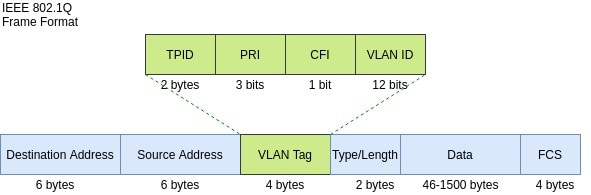
DHCP
When VLAN discovery is complete, the endpoint will send a DHCP discovery message to the DHCP server. Typically, the DHCP server is a router or windows/linux platform, but the Cisco Unified Communications Manager, as well as other DHCP server types, can also fulfill this role. A limitation in using the Cisco Unified Communications Manager is that it allows support for only up to 1000 devices. However, in either case, an option is made available for the TFTP server address to be discovered at the same time. This option is called Option 150. When the DHCP server receives the DHCP discovery, it responds with a DHCP offer. The DHCP offer includes an IP address, subnet mask, and default gateway address at a minimum. Additionally, a TFTP server address (with use of Option 150) and possibly one or more DNS addresses can also be provided. The end point responds to the DHCP offer with a DHCP request for the specific information sent in the DHCP offer. The DHCP server will then send a DHCP acknowledgment authorizing the use of the DHCP information exchanged and end the DHCP session.
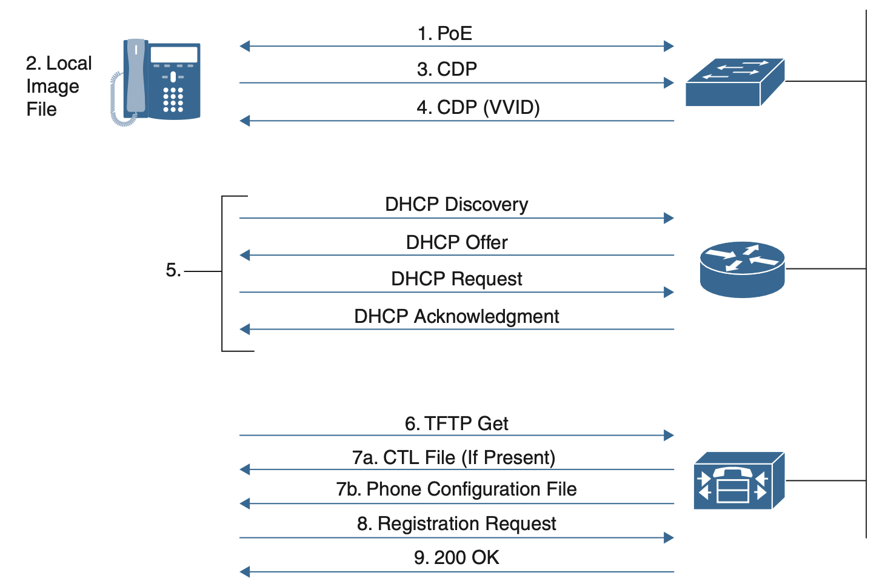
TFTP
Now that the endpoint has appropriate IP address information and the TFTP server address, it can send a TFTP Get message to the TFTP server. This message is typically sent over HTTP when using current endpoints, but TFTP signaling could be used as well. The communication that the endpoints sent to the TFTP server contains their MAC addresses because that is what the Cisco Unified Communications Manager uses to identify the endpoint’s configuration file.
Within a Cisco Unified CM system, endpoints such as IP phones rely on a TFTP-based process to acquire configuration files, software images, and other endpoint-specific information. The Cisco TFTP service is a file serving system that can run on one or more Unified CM servers.
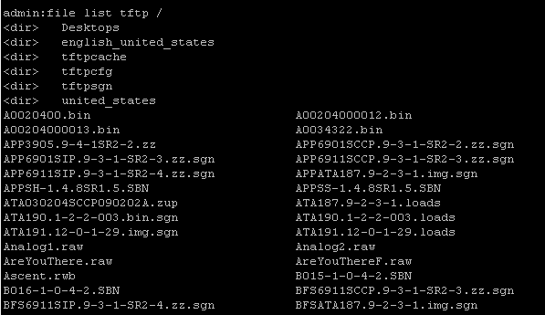
The TFTP file systems can hold several file types, such as the following:
- Phone configuration files
- Phone firmware files
- Certificate Trust List (CTL) files
- Identity Trust List (ITL) files
- Tone localization files
- User interface (UI) localization and dictionary files
- Ringer files
- Softkey files
PS : The TFTP server manages and serves two types of files, those that are not modifiable (for example, firmware files for phones) and those that can be modified (for example, configuration files).
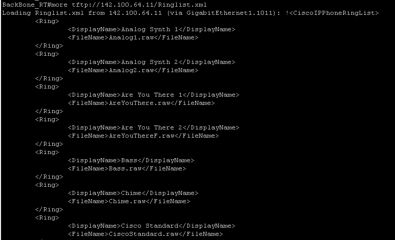
PS: You can use * as a mask.
admin:file list tftp Ringli
no such file or directory can be found
admin:file list tftp Ringli*
Ringlist-wb.xml Ringlist.xml
dir count = 0, file count = 2
admin:
PS: You can call this URL over browser.
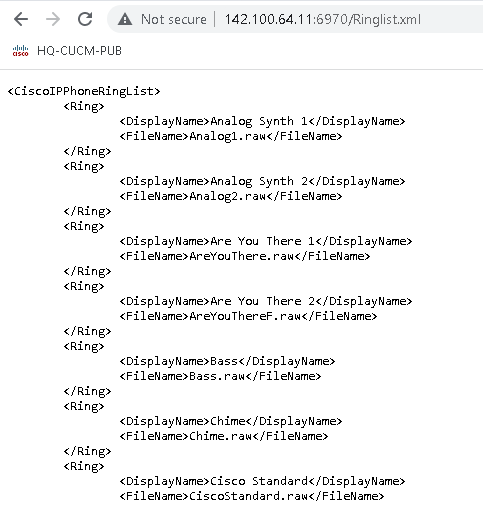
An Example of TFTP in Operation :
Every time an endpoint reboots, the endpoint will request a configuration file (via TFTP) whose name is based on the requesting endpoint's MAC address. (For a Cisco Unified IP Phone 7961 with MAC address ABCDEF123456, the file name would be SEPABCDEF123456.cnf.xml) The received configuration file includes the version of software that the phone must run and a list of Cisco Unified CM servers with which the phone should register. The endpoint might also download, via TFTP, ringer files, softkey templates, and other miscellaneous files to acquire the necessary configuration information before becoming operational.
NTP
The purpose of the NTP with CUCM is to ensure that the servers are aware of the correct time. The time in the CUCM servers is important because Voice Over Internet Protocol (VOIP) are extremely sensitive to time variations. The CUCM cluster must maintain a time synchronization that remains close to the other servers in the cluster, this is due to database replication requirements.
Lastly, time is important for troubleshooting as you want to have the correct timestamps in the logs.
The CUCM publisher needs an NTP source that is not a member of the CUCM cluster; therefore the CUCM publisher synchronizes its time with the NTP server. In this exchange, the CUCM publisher is an NTP client.
The CUCM subscribers synchronize their time with the CUCM publisher. In this exchange, the CUCM publisher is an NTP server where the CUCM subscribers are NTP clients.
Recomendation : NTP is a Client\Server protocol which communicates over User Datagram Protocol (UDP) on port 123. Cisco highly recommends the use of a Stratum 1, Stratum 2, or Stratum 3 NTP server as the CUCM Publisher's external NTP reference. Any NTP source for the CUCM publisher MUST NOT be higher than stratum 4.
PS : CUCM uses the NTP watchdog in order to keep the time synchronized with the NTP server. The NTP Watchdog periodically polls configured external NTP server(s) and restarts NTP if the time is offset by more than three seconds.
From NTP Server
BackBone_RT(config)#ntp master 5
!
BackBone_RT#show ntp status
Clock is synchronized, stratum 5, reference is 127.127.1.1
nominal freq is 250.0000 Hz, actual freq is 250.0000 Hz, precision is 2**10
ntp uptime is 4341900 (1/100 of seconds), resolution is 4000
reference time is E626CE05.E3127108 (00:06:29.887 UTC Thu May 12 2022)
clock offset is 0.0000 msec, root delay is 0.00 msec
root dispersion is 2.33 msec, peer dispersion is 1.20 msec
loopfilter state is 'CTRL' (Normal Controlled Loop), drift is 0.000000000 s/s
system poll interval is 16, last update was 11 sec ago.
From CUCM
admin:utils ntp status
ntpd (pid 29095) is running...
remote refid st t when poll reach delay offset jitter
==============================================================================
*142.100.64.1 LOCAL(1) 5 u 112 1024 377 1.198 0.106 0.339
synchronised to NTP server (142.100.64.1) at stratum 6
time correct to within 25 ms
polling server every 1024 s
Current time in UTC is : Wed May 11 23:52:26 UTC 2022
Current time in Etc/GMT+3 is : Wed May 11 20:52:26 -03 2022
admin:
NTP query from CUCM
admin:utils network capture port 123
Executing command with options:
size=128 count=1000 interface=eth0
src= dest= port=123
ip=
17:58:43.896688 IP hqcucmsub.52852 > hqcucmpub.ntp: NTPv4, Client, length 48
17:58:43.897749 IP hqcucmpub.ntp > hqcucmsub.52852: NTPv4, Server, length 48
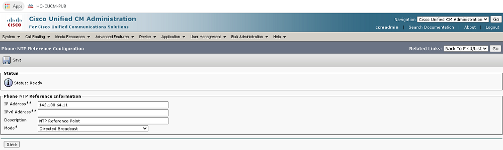
For SIP Phones: It is mandatory that you configure Phone NTP References and assign them through the device pool. These references direct the SIP phone to an appropriate NTP server that can provide the network time. If a SIP phone cannot get its date/time from the provisioned “Phone NTP Reference” the phone receives this information when it registers with Unified Communications Manager.
For SCCP Phones: Phone NTP References are not required as SCCP phones obtain their network time from Unified Communications Manager directly through SCCP signaling.
Phone Registration
This document covers the IP Phone Registration Process with the Cisco Unified Communications Manager (CUCM). It covers both SCCP and SIP Phone Registration Process to help the beginners to understand the basics of IP Phone boot process better which will help in Configuration and Troubleshooting the Network related issues easily.
SCCP
- (1)SCCP phone obtains the Power (PoE or AC adapter).
- (2)The phone loads its locally stored firmware image.
- (3)The phone learns the Voice VLAN ID via CDP from the switch.
- (4)The phone uses DHCP to learn its IP address, subnet mask, default gateway and TFTP server address.
- (5)The phone contacts the TFTP server and requests its configuration file. Each phone has a customized configuration file named SEP
- (6)The phone registers with the primary CUCM server listed in its configuration file. CUCM then sends the softkey template to the phone using SCCP messages.
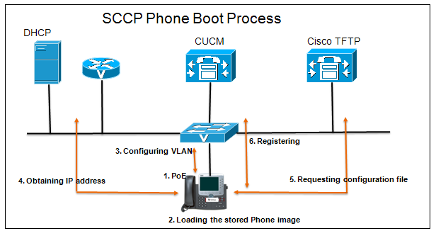
PS : You can pull configuration file with CMD from TFTP which is belong to CUCM.
C:\Windows\system32>tftp -i 142.100.64.11 get SEPhquserone.cnf.xml
Transfer successful: 7235 bytes in 1 second(s), 7235 bytes/s
then you can read this file:
C:\Windows\system32>notepad SEPhquserone.cnf.xml
File Content
<device xsi:type="axl:XIPPhone" ctiid="13" uuid="{5a166317-0328-4007-9d2b-4ec7a92c79c7}">
<fullConfig>true</fullConfig>
<portalDefaultServer>142.100.64.11</portalDefaultServer>
<deviceProtocol>SCCP</deviceProtocol>
<sshUserId></sshUserId>
<sshPassword></sshPassword>
<ipAddressMode>0</ipAddressMode>
<allowAutoConfig>true</allowAutoConfig>
<dadEnable>true</dadEnable>
<redirectEnable>false</redirectEnable>
<echoMultiEnable>false</echoMultiEnable>
<ipPreferenceModeControl>0</ipPreferenceModeControl>
<ipMediaAddressFamilyPreference>0</ipMediaAddressFamilyPreference>
<tzdata>
<tzolsonversion>2018c</tzolsonversion>
<tzupdater>tzupdater.jar</tzupdater>
</tzdata>
<mlppDomainId>000000</mlppDomainId>
<mlppIndicationStatus>Off</mlppIndicationStatus>
<preemption>Disabled</preemption>
<executiveOverridePreemptable>false</executiveOverridePreemptable>
<devicePool uuid="{1b1b9eb6-7803-11d3-bdf0-00108302ead1}">
<revertPriority>0</revertPriority>
<name>Default</name>
<dateTimeSetting uuid="{9ec4850a-7748-11d3-bdf0-00108302ead1}">
<name>CMLocal</name>
<dateTemplate>M/D/Y</dateTemplate>
<timeZone>Greenwich Standard Time</timeZone>
<olsonTimeZone>Etc/GMT</olsonTimeZone>
</dateTimeSetting>
<callManagerGroup>
<name>Default</name>
<tftpDefault>true</tftpDefault>
<members>
<member priority="0">
<callManager>
<name>142.100.64.11</name>
<description>hqcucmpub</description>
<ports>
<ethernetPhonePort>2000</ethernetPhonePort>
<sipPort>5060</sipPort>
<securedSipPort>5061</securedSipPort>
<sipOAuthPort>5090</sipOAuthPort>
<sipMRAOAuthPort>5091</sipMRAOAuthPort>
<mgcpPorts>
<listen>2427</listen>
<keepAlive>2428</keepAlive>
</mgcpPorts>
</ports>
<processNodeName>142.100.64.11</processNodeName>
</callManager>
</member>
</members>
</callManagerGroup>
<srstInfo uuid="{cd241e11-4a58-4d3d-9661-f06c912a18a3}">
<name>Disable</name>
<srstOption>Disable</srstOption>
<userModifiable>false</userModifiable>
<ipAddr1></ipAddr1>
<port1>2000</port1>
<ipAddr2></ipAddr2>
<port2>2000</port2>
<ipAddr3></ipAddr3>
<port3>2000</port3>
<sipIpAddr1></sipIpAddr1>
<sipPort1>5060</sipPort1>
<sipIpV6Addr1></sipIpV6Addr1>
<sipIpAddr2></sipIpAddr2>
<sipPort2>5060</sipPort2>
<sipIpAddr3></sipIpAddr3>
<sipPort3>5060</sipPort3>
<isSecure>false</isSecure>
</srstInfo>
<connectionMonitorDuration>120</connectionMonitorDuration>
</devicePool>
<MissedCallLoggingOption>10</MissedCallLoggingOption>
<commonProfile>
<phonePassword></phonePassword>
<backgroundImageAccess>true</backgroundImageAccess>
<callLogBlfEnabled>2</callLogBlfEnabled>
</commonProfile>
<loadInformation></loadInformation>
<vendorConfig>
<disableSpeaker>false</disableSpeaker><autoSelectLineEnable>0</autoSelectLineEnable><deviceType>30016</deviceType><ipDetectionURL></ipDetectionURL><ldapServers></ldapServers><rtpPortRangeFirst></rtpPortRangeFirst><rtpPortRangeLast></rtpPortRangeLast><settingsAccess>1</settingsAccess><verifySoftwareVersions>0</verifySoftwareVersions><videoCapability>0</videoCapability><webAccess>0</webAccess><rtcp>0</rtcp><moreKeyReversionTimer>5</moreKeyReversionTimer><autoCallSelect>1</autoCallSelect><g722CodecSupport>0</g722CodecSupport><recordingToneLocalVolume>100</recordingToneLocalVolume><recordingToneRemoteVolume>100</recordingToneRemoteVolume></vendorConfig>
<versionStamp>1654087884-113ed3d4-7e8d-44af-9add-8d30b4ee5dc0</versionStamp>
<userLocale>
<name>English_United_States</name>
<uid>1</uid>
<langCode>en_US</langCode>
<version>12.0.0.0(1)</version>
<winCharSet>iso-8859-1</winCharSet>
</userLocale>
<networkLocale>United_States</networkLocale>
<networkLocaleInfo>
<name>United_States</name>
<uid>64</uid>
<version>12.0.0.0(1)</version>
</networkLocaleInfo>
<deviceSecurityMode>1</deviceSecurityMode>
<sipOAuthMode>0</sipOAuthMode>
<idleTimeout>0</idleTimeout>
<authenticationURL>http://hqcucmpub:8080/ccmcip/authenticate.jsp</authenticationURL>
<directoryURL>http://hqcucmpub:8080/ccmcip/xmldirectory.jsp</directoryURL>
<idleURL></idleURL>
<informationURL>http://hqcucmpub:8080/ccmcip/GetTelecasterHelpText.jsp</informationURL>
<messagesURL></messagesURL>
<proxyServerURL></proxyServerURL>
<servicesURL>http://hqcucmpub:8080/ccmcip/getservicesmenu.jsp</servicesURL>
<secureAuthenticationURL>https://hqcucmpub:8443/ccmcip/authenticate.jsp</secureAuthenticationURL>
<secureDirectoryURL>https://hqcucmpub:8443/ccmcip/xmldirectory.jsp</secureDirectoryURL>
<secureUDSUsersAccessURL>https://hqcucmpub:8443/cucm-uds/users</secureUDSUsersAccessURL>
<secureIdleURL></secureIdleURL>
<secureInformationURL>https://hqcucmpub:8443/ccmcip/GetTelecasterHelpText.jsp</secureInformationURL>
<secureMessagesURL></secureMessagesURL>
<secureServicesURL>https://hqcucmpub:8443/ccmcip/getservicesmenu.jsp</secureServicesURL>
<dscpForSCCPPhoneConfig>96</dscpForSCCPPhoneConfig>
<dscpForSCCPPhoneServices>0</dscpForSCCPPhoneServices>
<dscpForCm2Dvce>96</dscpForCm2Dvce>
<transportLayerProtocol>1</transportLayerProtocol>
<dndCallAlert>5</dndCallAlert>
<phonePersonalization>0</phonePersonalization>
<rollover>0</rollover>
<singleButtonBarge>0</singleButtonBarge>
<joinAcrossLines>0</joinAcrossLines>
<autoCallPickupEnable>false</autoCallPickupEnable>
<blfAudibleAlertSettingOfIdleStation>0</blfAudibleAlertSettingOfIdleStation>
<blfAudibleAlertSettingOfBusyStation>0</blfAudibleAlertSettingOfBusyStation>
<capfAuthMode>0</capfAuthMode>
<capfList>
<capf>
<phonePort>3804</phonePort>
<processNodeName>142.100.64.11</processNodeName>
</capf>
</capfList>
<certHash></certHash>
<encrConfig>false</encrConfig>
<advertiseG722Codec>1</advertiseG722Codec>
<mobility>
<handoffdn></handoffdn>
<dtmfdn></dtmfdn>
<ivrdn></ivrdn>
<dtmfHoldCode>*81</dtmfHoldCode>
<dtmfExclusiveHoldCode>*82</dtmfExclusiveHoldCode>
<dtmfResumeCode>*83</dtmfResumeCode>
<dtmfTxfCode>*84</dtmfTxfCode>
<dtmfCnfCode>*85</dtmfCnfCode>
</mobility>
<TLSResumptionTimer>3600</TLSResumptionTimer>
<userId></userId>
<ownerId></ownerId>
<phoneServices useHTTPS="true">
<provisioning>0</provisioning>
<phoneService type="1" category="0">
<name>Missed Calls</name>
<url>Application:Cisco/MissedCalls</url>
<vendor></vendor>
<version></version>
</phoneService>
<phoneService type="2" category="0">
<name>Voicemail</name>
<url>Application:Cisco/Voicemail</url>
<vendor></vendor>
<version></version>
</phoneService>
<phoneService type="1" category="0">
<name>Received Calls</name>
<url>Application:Cisco/ReceivedCalls</url>
<vendor></vendor>
<version></version>
</phoneService>
<phoneService type="1" category="0">
<name>Placed Calls</name>
<url>Application:Cisco/PlacedCalls</url>
<vendor></vendor>
<version></version>
</phoneService>
<phoneService type="1" category="0">
<name>Personal Directory</name>
<url>Application:Cisco/PersonalDirectory</url>
<vendor></vendor>
<version></version>
</phoneService>
<phoneService type="1" category="0">
<name>Corporate Directory</name>
<url>Application:Cisco/CorporateDirectory</url>
<vendor></vendor>
<version></version>
</phoneService>
</phoneServices>
<SSOSPServers>
<SSOSPServer>142.100.64.11</SSOSPServer>
<SSOSPServer>142.100.64.12</SSOSPServer>
</SSOSPServers>
</device>
SIP
SIP Phones use a different set of steps to achieve the same goal. Steps 1 to 4 are the same as SCCP Phones, refer the steps as illustrated in the figure: SCCP Phone Boot Process .
- (5) The phone contacts the TFTP server and requests the Certificate Trust List file (only if the cluster is secured).
- (6) The phone contacts the TFTP server and requests its SEP
- (7) If the SIP Phone has not been provisioned before boot time, the SIP Phone downloads the default configuration XMLDefault.cnf.xml file from the TFTP server.
- (8) The SIP phone requests a firmware upgrade (Load ID file), if one was specified in the configuration file. This process allows the phone to upgrade the firmware image automatically when required for a new version of CUCM.
- (9) The phone downloads the SIP dial rules configured for that phone.
- (10) The phone Establish connection with the primary CUCM and the TFTP server end to end.
- (11) The phone Registers with the primary CUCM server listed in its configuration file.
- (12) The phone downloads the appropriate localization files from TFTP.
- (13) The phone downloads the softkey configurations from TFTP.
- (14) The phone downloads custom ringtones (if any) from TFTP.
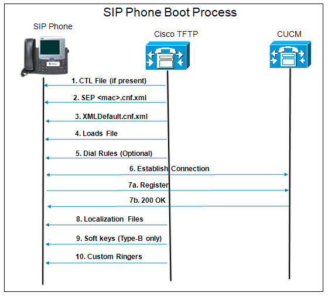
NET-LAB-01 : Register endpoint to CUCM with using SSCP and SIP respectively and capture from user site.
Utils Command
Some Useful "UTILS" Commands :
utils dbreplications runtimestate
This command monitors progress of the database replication process and provides replication state in the cluster.
utils network ping
This command test network reachability
utils network traceroute
This command traces IP packets that are sent to a remote destination.
utils ntp restart/status/config
This command (utils ntp) have some subcommands which is about NTP Process.
utils service list
This command retrieves a list of all services.
utils service stop/start abcd
This command starts/stops abcd service.
utils network captures eth0
This command captures IP packets on the specified Ethernet interface.
Example :
```text
utils network capture eth0 port 123
for network time protocol (ntp)
<br>
```text
utils network capture eth0 file rogue size 300000 src a.b.c.d
This command dumps to a file (platform/cli/rogue.cap) all traffic received on interface eth0 from the network device having the IPv4 address of a.b.c.d. The file size will be limited to 300,000 bytes.
utils network capture eth0 port 5060 host ip a.b.c.d
This command dumps to the screen all SIP (UDP port 5060) traffic seen between the interface eth0 on the Unified Communications server and the device using IP address a.b.c.d. In this case, the IP address provided could be that of a SIP phone.
QoS
Types of Data
- Interactive Data : Human to Human (Voice,Video etc.)
- Non-interactive Data : Human to machine or Machine to Machine (Http traffic, backup traffic, FTP etc.)
Data Characteristics
- Bandwidth
- 30-128kbps for voice, 384-20.000 for video
- Latency
- 150ms for voice, 200-400ms for video (one way)
- Jitter
- jitter <= 30ms for voice, jitter <= 30-50ms for video
- Loss
- Loss <= %1 for voice, Loss <= %01-1 for video
PS : Why there are lots of differences between voice and video ? (Hint:iframe)
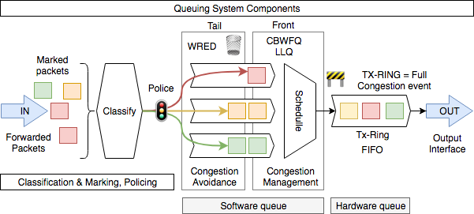
QoS Tools
- Classification & Marking
- Policing & Shaping
- Congestion Management
- Congestion Avoidance
PS : Don’t mix up TOS (Type of Service) and COS (Class of Service). The first one is found in the header of an IP packet (layer 3) and the second one is found in the header of 802.1Q (layer 2). It’s used for Quality of Service on trunk links.
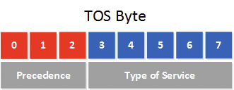
Ps : In 1998, define TOS byte like below.
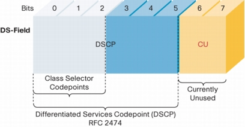
DSCP value define in RFC 2474 as a 6 bit. Its decimal value between 0-63. We have 64 bits for define traffic. In this point we need predefine marks which are accepted by most vendors. Sometimes we need backward compatiple marking for convert DSCP to COS... As you know we can use Qos in L2 or L3 or both. Because of this it should be backward compatiple.
Per Hop Behaviour (PHB)
- Default Forwarding (DF)
- All DSCP bits are
ZERO. Default behaviour
- All DSCP bits are
- Class Sector (CS)
- It is for backward compatiple
- Use only 3 bit (IPP)
- Assured Forwarding (AF)
- It has 4 class and 3 Drop probability (DP)
- Explicit Forwarding (EF)
- It used for
Voicetraffic.
- It used for
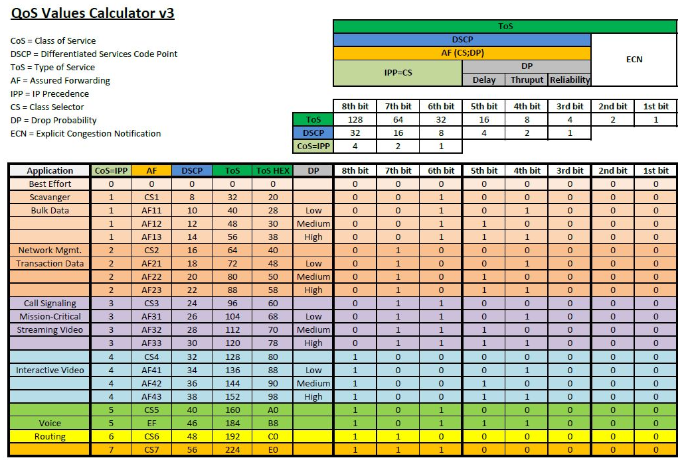
QoS-LAB-01 : Capture file from BB router and analyse COS and DSCP fields in header.
QoS Tools
- Classification & Marking
- Policing & Shaping
- Congestion Management
- Congestion Avoidance
Classification & Marking
- Header Inspection : There are quite some fields in our headers that we can use to classify applications. For example, telnet uses TCP port 23 and HTTP uses TCP port 80. Using header inspection you can look for:
Layer 2: MAC addresses
Layer 3: source and destination IP addresses
Layer 4: source and destination port numbers and protocol
- Payload Inspection : Payload inspection is more reliable as it will do deep packet inspection. Instead of just looking at layer 2/3/4 information the router will look at the contents of the payload and will recognize the application. On Cisco IOS routers this is done with NBAR (Network-Based Application Recognition).
QoS-LAB-02 : Write a policy on BB router with two way (Header and Payload inspection ) respectivly for matching telnet traffic and try telnet from Cube-1 to BB router. Copy running config for each scenario.